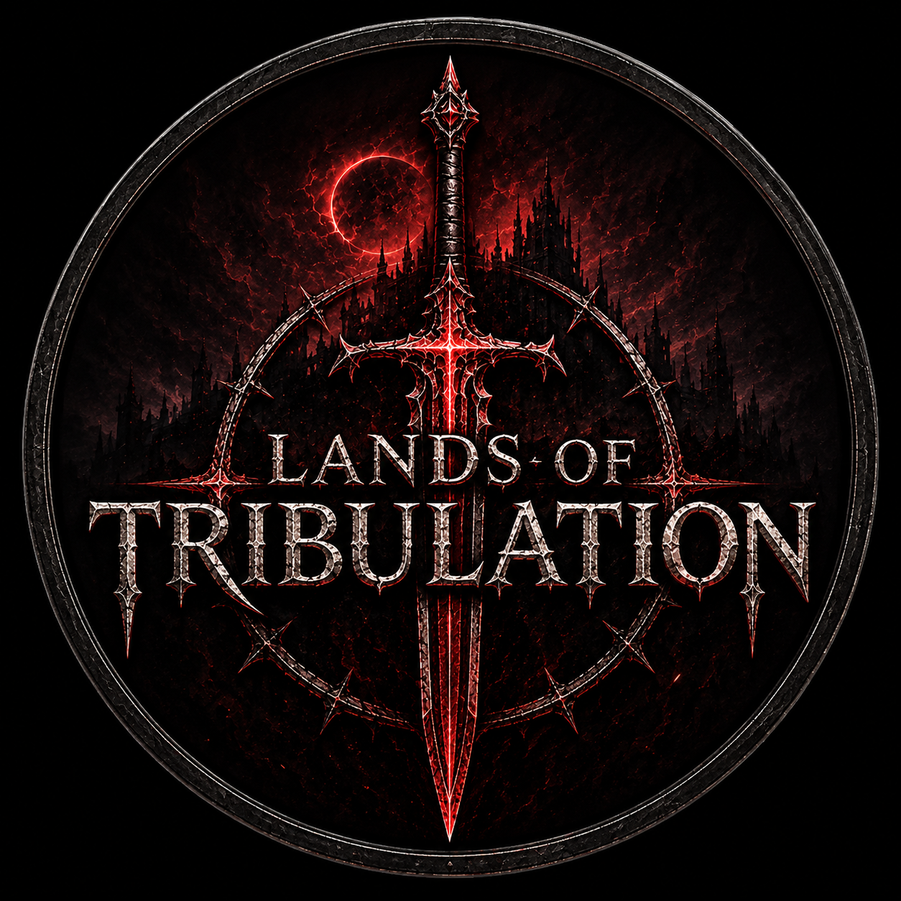

Follow the development of Lands of Tribulation from its earliest foundations to the release of Version 1.0.
Explore each milestone, track our progress, and join us as we build the world one step at a time.
Follow DevelopmentBuild the foundations of the project before development begins.
✔ Choose Engine
✔ Website
✔ Project Setup
🔨 Core Systems
○ Art Direction